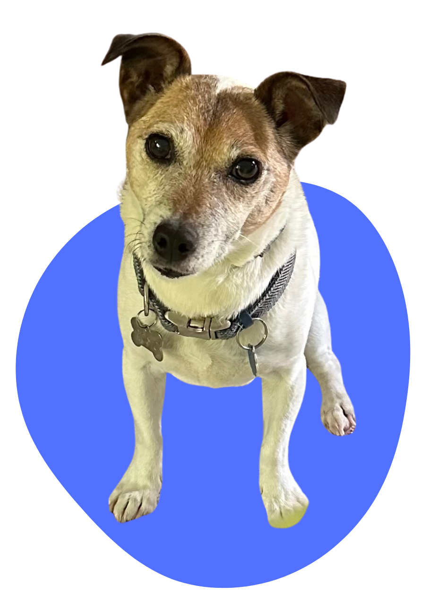

Hi! I'm Whitney, a product designer and front-end developer based in NYC.
I graduated from Wesleyan University in 2023, where I earned my BA in computer science and integrated design. My background in coding allows me to effectively communicate with developers and gauge what is possible to implement within a given timeline or framework.
I approach design challenges with accessibility and inclusivity as guiding principles, and ultimately aspire to make the world a better place by bridging gaps between people and technology.
When I'm not designing/developing, I love to go on walks and explore New York with my dog, try new recipes, and upcycle thrifted clothing. Thanks for checking out my portfolio!
